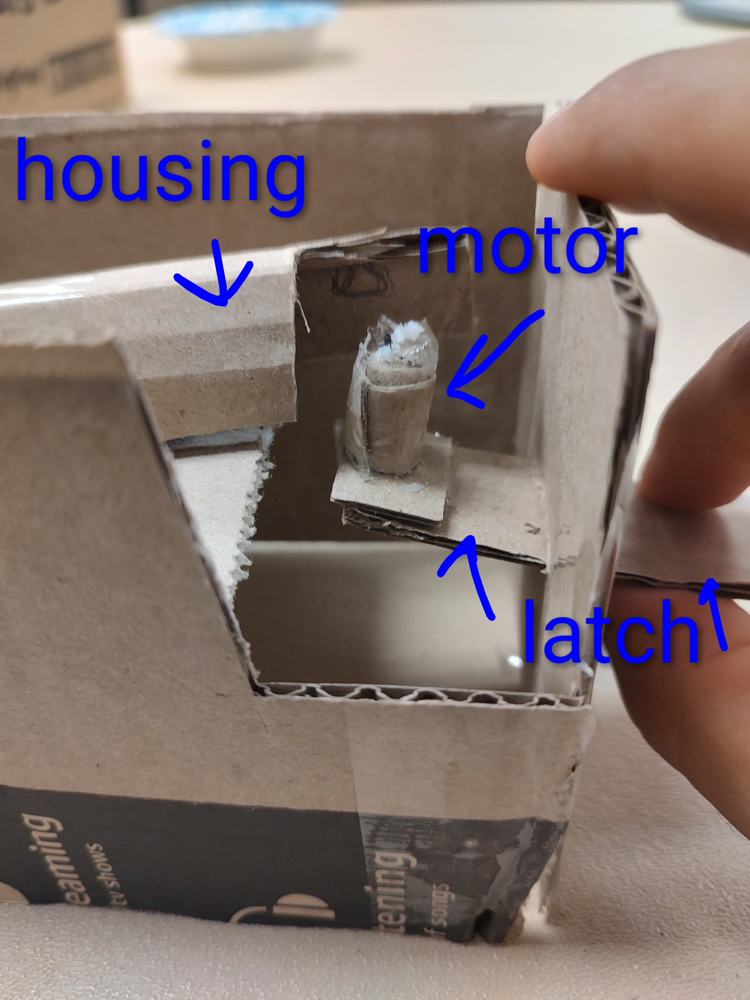
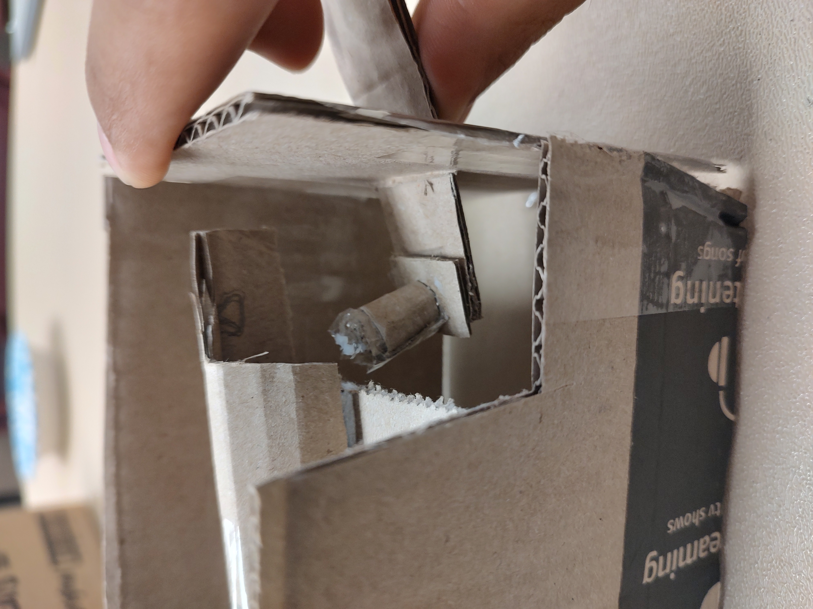
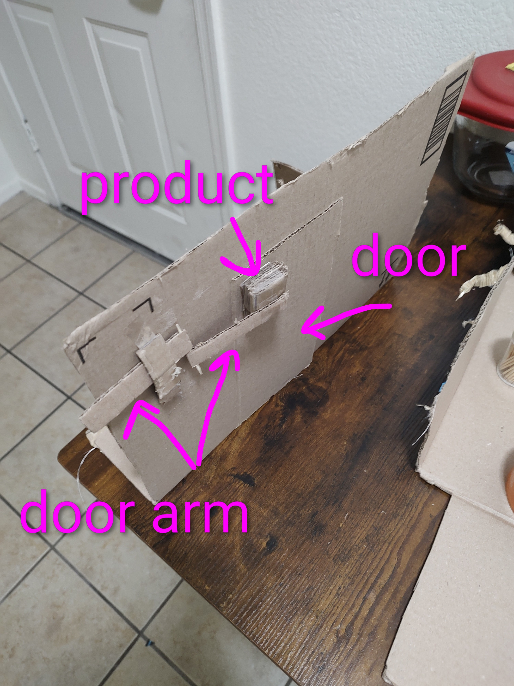
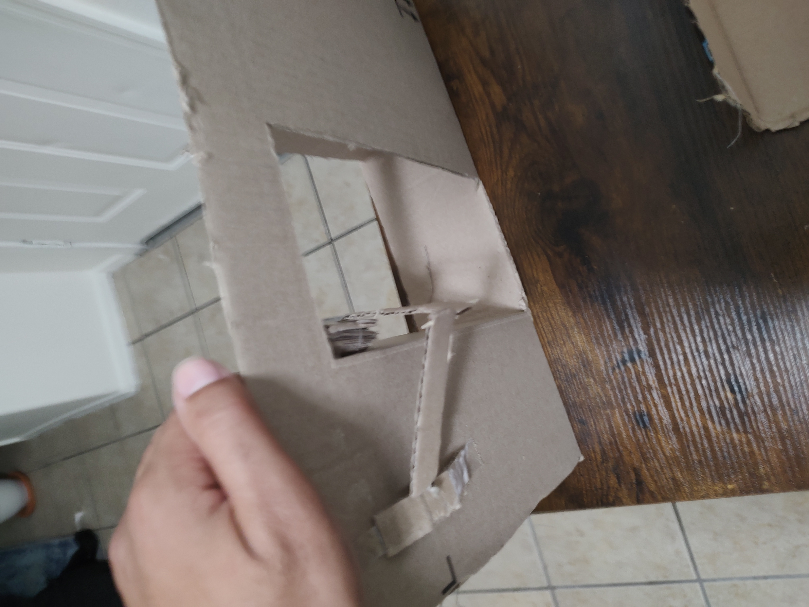
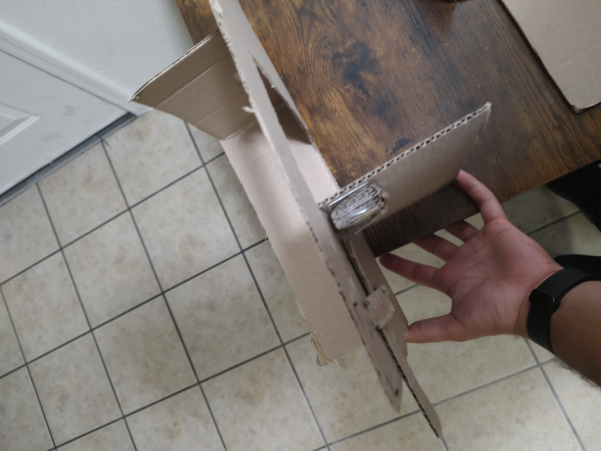

Design Ideation
Intro/overview
The goal of the Design Ideation phase was to convert previously established user needs and product requirements into functional design features. To achieve this goal, the team prioritized the needs/requirements we viewed as most important as well as most practical for the scope of our project. We then brainstormed multiple solutions for each of them which, when put together, could form successful features to be used in the design of our product. Finally, we created 3 distinct design concepts to help ourselves and potential clients see the vision of our project.
Generating Ideas
Shown below is the table of brainstormed features correlating to their prioritized user need/requirement.
| requirement / need | feature | detail |
|---|---|---|
| The product must stop if something is in the way. | Sensor | The device has an additional sensor focusing on the doorway line to make sure there is nothing in the area. This is important because we do not want the door to shut on people, animals, or objects. |
| The product must stop if something is in the way. | Smaller Motor | The device only produces a max of 10lbs of force. This is important because if someone gets stuck inbetween the door they can push the door to prevent closure. |
| The product must stop if something is in the way. | Resistance-sensing Motor | The motor is able to send data about the force acting against it, and if the force is over a certain threshold, the motor stops and reverses. |
| The product must stop if something is in the way. | Radar/Sensor | The device sends and receives transmissions to and from a chip that users carry. The door remains open as long as the chip is within a certain distance from the device (~2 feet). |
| The product must stop if something is in the way. | Microphone | The device listens for a keyword (such as "stop") and upon registering the keyword, stops the motor. |
| The product must be easy to open in an emergency | Latch | The device has a latch inside that unhindges the motor to the door causing the door to open without resistance. This is important because it refers to safety if the mechanism loses power. |
| The product must be easy to open in an emergency | Button | The device has a secret button that will turn the motor off to make opening the door easier. This is important because it refers to safety if the mechanism loses power. |
| The product must be easy to open in an emergency | Pin/Key | The device disengages the motor when a key/pin is inserted through a hole. This is important because it refers to safety if the mechanism loses power. |
| The product must be easy to open in an emergency | Microphone | The device disengages the motor when a keyword (such as disengage) is spoken by the user. |
| The product can stay closed around children | Proximity/distance sensor | This device will be able to stay closed if the object/person is too short. This is to prevent children or animals from getting into something they are not supposed to. This is important as it was stated in our user needs. |
| The product can stay closed around children | Radar/Sensor | The device sends and receives transmissions to and from a chip that authorized users carry. The device only operates when the chip is within a certain distance (~ 3 feet). |
| The product can stay closed around children | Button/Switch | The device has a button or switch in an inconspicuous area which acts as a "child lock". The motor will not activate until the button/switch is activated again. |
| The product can stay closed around children | Facial Recognition | The device uses a facial scanner to store authorized users' Face IDs. Authorized face must be scanned in order for the motor to activate. |
| The product can stay closed around children | Scanner | The device has a QR/Barcode scanner that activates when a user is in the proximity. The user must present the proper QR/Barcode to activate the motor. |
| The product is able to work in case of a power outage | Seperate Battery | This is very important in case everything loses power. The device has a small battery that can power the door for an amount of time until the power gets back on. |
| The product is able to work in case of a power outage | Power Adapter | The product comes with an adapter that can hook up to a power bank (such as those commonly used to charge small devices). The device can perform basic funtioning at this lower power slowly and/or for a short time. |
| The product is able to work in case of a power outage | Capacitor Failsafe | The device has a series of capacitors that, upon the device losing power, provide a boost of current just strong enough to let the door open/stay open. |
| The product is able to work in case of a power outage | Spring system | The door is spring loaded when shut. If power to the device is lost, the motor disengages and the spring pushes the door open. |
| The product will start opening before user gets too close | Forward Sensor | This sensor will measure objects equal to the door length plus an additional 6-12 inches. This is important because the door should not open and hit the customer while in use. |
| The product will start opening before user gets too close | Sensor/radar | The user will carry a chip which tells the device to activate the motor when they are within a certain radius. |
| The product distinguishes between adults, kids, and animals. | Distance Sensor | This device will distinguish between different heights to promote safety and prevent kids or animals from opening doors that they should not open. |
| The product distinguishes between adults, kids, and animals. | Sensor/Radar | The device can detect chips carried by authorized users. |
| The product distinguishes between adults, kids, and animals. | Microphone | The product can listen to/distinguish between different voices, only activating when the correct voice is heard. |
| The product distinguishes between adults, kids, and animals. | Knowledge Test | The device submits a query to each potential user which only an adult would know the answer to. |
| The product distinguishes between adults, kids, and animals. | Soundwave Detection | The device can identify the walking-pattern sound/vibration of children and animals, and deny them access. |
| The product can lock/unlock the door | Slider | The device will have a slider installed next to the door latch. This will slide before and after the door moves. This is important because some doors should stay locked/closed wile the device does not activate. |
| The product can lock/unlock the door | Pulley | The device has a pully that is run with the motor. This will pull at the latch to unlock the latch. |
| The product can lock/unlock the door | Motor Function | The device has a mode which keeps the system in tension, pushing back against attempts to manually open the door. |
| The product can lock/unlock the door | Second Motor | The device has a motor attached to the existing lock on the door, which can activate/deactive it. |
| The product can lock/unlock the door | Magnetic Field | A magnet is attached to the edge of the door. The device can induce a strong magnetic field from the doorframe which resists movement of the magnet. |
| The product can lock/unlock the door | Friction Brake | The device controls a pad attached to the bottom edge of the door. This pad pushes against the ground, creating friction and resisting movement. |
| The product has an auto close feature. | Delay in Sensor | After someone leaves the sensor view, there will be a delay then it will start closing. This is important so that the door can be closed and locked depending on user preference. |
| The product has an auto close feature. | Programmed Timer | The device closes the door after an amount of time from when it opened, selected by the user. |
| The product has an auto close feature. | Sensor/Radar | The device closes once a chip, carried by all users, is outside a certain radius. |
| The product has an auto close feature. | Multi-directional Sensors | Sensors on each side of the door are multi-directional. The device closes only once all objects are outside of a certain range. |
| The product has an auto close feature. | Movement Tracking | A camera/sensor locks onto the user when they approach. It stays locked on until the user is outside a certain range, then the door closes. |
| The product has an auto close feature. | Motion Sensor | The device closes the door once no motion is detected. |
| The product has an auto close feature. | Microphone | The device closes the door if the volume of the room stays below a threshold for a certain amount of time. |
| The product has an auto close feature. | Tripwire Sensors | The device is linked to sensors placed a few feet past each side of the door. When the user walks past the sensor opposite from the direction they entered, the device closes the door. |
| The product has a simple power supply. | Battery | The device has a battery that powers it. This will be convienient so that there are no extra wires outside the product. |
| The product has a simple power supply. | Wired | The device has a power wire that runs around the door and into a power outlet. This prevents the device from needing to have batteries replaced and suplies constant power. |
| The product has a simple power supply | Solar | The device will have a small solar panel on the side. This will help recharge the device as long as it is near a light source. |
| The product has 90 or 180 degree openability. | 360 Motor | The door opens as much as it can by connecting the door straight to the motor. |
| The product has 90 or 180 degree openability. | Teethed Pulley | The motor is connected to a pulley that will pull the door open. This will also work in reverse which will help push the door closed. |
| The product has 90 or 180 degree openability. | Mechanical Arms | The motor is connected to mechanical arms that will rotate and bend to open the door. This will prevent loss of tension and can help with how much power the motor is using. |
| The product has 90 or 180 degree openability. | Dual-motor | The device has a motor on either side of the door. They are connected by a strong yet thin string/wire attached to the door. The motors synchroniously run in opposite directions to allow each other to pull the door in either direction. |
| The product has 90 or 180 degree openability. | Magnets | A magnet is attached to the top of the door. The device moves a second magnet along a ceiling-mounted track, pulling the door with it to a specified number of degrees. |
| The product does not interfere with manual opening of doors. | Auto-Disengage Program | If the device senses someone trying to open the door and it is not in a lock setting, then the device will disengage the motor so that the motor is not fighting the user in opening the door. |
| The product does not interfere with the manual opening of doors. | Assisted Open | When the device senses manual use of the door, the motor activates to continue moving the door in the same direction. |
| The product does not interfere with manual opening of doors. | Handle Sensor | A sensor on the door handle disengages the motor and allows free movement of the door. |
| The product does not interfere with manual opening of the doors. | Stand-by Mode | "Stand-by Mode" can be activated which disengages all device features for a period of time or until the mode is switched off. |
| The product does not interfere with manual opening of the doors. | Motor Auto-Clutch | When the door is manually opened, the motor does not activate but also does not fully detach, allowing the door to move freely until movement stops. |
| The product stops operation when sensing more resistance than usual. | Auto-Disengage Program | This can happen if the door is locked, latched, or something is blocking the door. To prevent damage to the device and the obects, the device will disengage the motor after it exerts more than 10 lbs of force. |
| The product stops operation when sensing more resistance than usual. | Self-Sensing Motor | If the motor is moving, then stops moving earlier than expected for more than 1 second, it will deactivate. |
| The product stops operation when sensing more resistance than usual. | Power Sensing | The motor is supplied with variable power when met with varying resistance to keep its speed contant, up until a threshold at which it deactivates. |
| The door can stay closed while the customer is gone. | Latch | The device can come with a latch on the top of the door so that when closed, the latch engages and locks the door for the user. |
| The door can stay closed while the customer is gone. | Slider | The user can engage or disengage a slider. This will prevent the device from using the slider to unlock the door and keep the door closed. |
| The door can stay closed while the customer is gone. | Off Switch | When the user leaves, they can press a delayed off switch that will turn off the motor after 10 min. This means that the next time the customer comes to the door, they will either have to open it themselves or turn the motor back on. |
| The device does not stay on all day. | Timer | The device has a timer that will turn the motor off after 10 min. The sensor will stay on and turn the motor back on if it senses movement. |
| The device does not stay on all day. | Clock | The device will have a clock which can program the device to turn off during certain times of the day. This is important because it turns the whole device off which saves energy and prevents door from automatically opening when the user does not want them to open. |
| The device does not stay on all day. | Power Button | The device has a button which cut off all power to itself, and can also restore power to itself. |
| The device does not stay on all day. | Sensor | The same sensor which tells the motor to open the door can also be used to turn off the device (such as if the sensor is receiving input for longer than 15 seconds). |
| The product must follow ADA rules | Distance Sensor | The device will read at least 32 inches from the door for when the door opens forward so that it follows ADA compliance. This will also prevent the door from opening in front of users and colliding with objects that are moving toward the door. |
| The product must follow ADA rules | Motor Speed | The motor speed will be controlled to take at least 3 seconds to fully open, and at least 5 seconds to close the door from 90 degrees open. |
| The product must follow ADA rules | Resistance Testing | When the door is being manually opened, any resistance from the motor or other hardware will not exceed 5 pounds. |
| The product must follow ADA rules | Mounting Instructions | Instructions included with the device will inform the user to mount the user interface between 34 and 48 inches above the floor. |
| The product must follow ADA rules | Ergonomics | All interactable elements of the device will have special design consideration to be activatable with one hand, without tight grasping, pinching, or wrist-twisting. |
| The product must follow ADA rules | User Setting Limits | The device will not allow the user to program the device to close the door sooner than 5 seconds after it has opened. |
| The product is easily adjusted | UI w/ Buttons | The device has a user interface which allows the user to program settings through the use of buttons. |
| The product is easily adjusted | UI w/ Touchscreen | The device has a user interface which allows the user to program settings through the use of a touchscreen. |
| The product is easily adjusted | Potentiometer | The motor has a physical dial which electrically changes its strength and/or speed. |
| The product is easily adjusted | Sliding Motor | The motor can be moved along the width of the door to adjust its effect on the door using the concept of torque. |
| The product is easily adjusted | Non-destructive Mounts | The mounting process of the device components uses technology such as adhesive/suction which do not cause damage to surfaces and are easy to relocate. |
| Products are installed by those with no experience | Limited Part Count | The device, when recieved by the consumer, has the minimum possible amount of components that must be put/together installed. |
| Products are installed by those with no experience | Modular Design | Any components that must be put together/installed by the consumer have attachments which are simple and intuitive. |
| Products are installed by those with no experience | Effective Instructions | An instruction booklet is written and modified, along with the installation process, until testing shows that the majority of users have zero struggles with installation. |
| Products are installed by those with no experience | Digital Access | The instuctions for installation feature a QR code which links to helpful video/picture tutorials. |
| The product has can be installed without the user owning tools | Included Tools | All tools required for installation are included in the packaging. |
| The product has can be installed without the user owning tools | No Tools Required | The design uses innovation such as snap-together technology, adhesive, suction, etc. which do not require tools to install. |
| The product has can be installed without the user owning tools | Self-installing | The design is robotic and assembles itself on arrival. |
| The product is easy to repair/debug if necessary | Debugger | The device can be prompted to scan its software for issues and attempt to remedy them. |
| The product is easty to repair/debug if necessary | Replaceable Parts | Every hardware component of the device can be swapped out if necessary, and is available to purchase through our business or at public stores. |
| The product is easy to repair/debug if necessary | Reset | The device has a reset feature which reverts all settings/code back to its default state. |
| The product is easy to repair/debug if necessary | Recurring Self-Scan | The device continually scans its software/hardware and can identify issues, reporting them to the user through audible/visual information. |
| The product is easy to repair/debug if necessary | Virtual Support | A website is created which provides solutions to common/possible issues. The website also links to live support. |
| The product has a durable build for long-term use | Dust-Proof | The main casing is sealed off to prevent dust from gathering on the electronics. |
| The product has a durable build for long-term use | Water-Resistant | The main casing uses materials which provide protection against mist/moisture. |
| The product has a durable build for long-term use | Impact-Rated | The components of the device are impact rated to withstand up to 50 lbs of instantaneous force. |
| The product has a durable build for long-term use | Rust-Proof | Any metal components exposed to the environment are finished with an anti-rust coating. |
| The product has a durable build for long-term use | Elastic Matetials | When possible, slightly elastic materials such as rubber are used over rigid materials to allow reversable deformation rather than cracking/shattering. |
| The product must have clear signals for open, closed, and errors. | Color-Changing LED | The device has an LED which changes color based on status. |
| The product must have clear signals for open, closed, and errors. | Blinking LED | The device has an LED which is either on, off, or blinking in different patters based on status. |
| The product must have clear signals for open, closed, and errors. | Buzzer | The device has a buzzer which uses different tones/patterns to indicate status. |
| The product must have clear signals for open, closed, and errors. | Speaker | The device has a speaker which outputs spoken phrases based on status. |
| The product must have clear signals for open, closed, and errors. | Text Output | The device outputs text to a screen near the doorframe based on its status. |
| The product’s most basic functioning requires little to no user programming. | Default Mode | The device is in "default mode" on arrival which has limited functionality but works safely in any almost any environment. |
| The product’s most basic functioning requires little to no user programming. | Quick Setup | The installation insructions explain how to program the device based on doorframe dimensions and desired function. |
| The product’s most basic functioning requires little to no user programming. | Preset Modes | The device has multiple preset software modes for the user to choose between after installing the device. |
| The product’s most basic functioning requires little to no user programming. | Auto-Setup | After installation, the device safely scans/feels out the environment through sensors/resistance-sensing and programs itself based on this information. |
| The product’s most basic functioning requires little to no user programming. | Built-in AI | After installation, an AI asks the user questions about the product's environment and desired functionality, then programs the software based on this information. |
Ranking/Grouping of Features
Concept Models
Model 1
 Lever to Disengage Motor 1
{kind=link}
The motor stays inside the housing where it will connect to gears that will move the arms of the door. If there is an emergency, the motor can be disengaged.
 Lever to Disengage Motor 2
{kind=link}
By disengaging the motor, the motor is moved below the housing where it can rotate, but nothing will happen to the door. This also prevents the motor from pushing against the user if they are trying to keep the door from opening or closing.
Model 2
 90 and 180 degree arm 1
{kind=link}
The product is designed to open at least 90 degrees. An additional arm which can rotate in a housing lets the door rotate an additional 90 degrees.
 90 and 180 degree arm 2
{kind=link}
This shows the first 90 degree opening. This with additional programming can make a door have the ability to always push out away from the user to increase safety and decrease injury.
 90 and 180 degree arm 3
{kind=link}
This shows the second 90 degrees in the opposite way. Though not all doors would be able to use this, this provides an opportunity for more open doors and increases mobility instead of waiting for a door to open in your direction.
Model 3
Step Six (video link)
Embedded a YouTube video that covers the